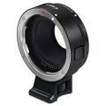

器材库 > 镜头转接环 > EF-EOS M

详细规格
发布日期
2012-07-23
镜头卡口
Canon EF-M
适用镜头
佳能 EF 镜头（包括EF-S镜头），CN-E 镜头除外
尺寸
66.6×26mm
重量
110g
微意桃2012-09-02 20:193.88 分
美观性 3.00趣味性 5.00耐用性 5.00性价比 2.50
产品图 / 样片
佳能 EF-EOS M
评测 / 相关文章
该产品暂无存档的评测文章
相关文章
- ［资讯］探秘EOS传奇（上） （存档）
- ［试用］体验EOS M转接40/2.8饼干头 （存档）
- ［资讯］佳能首款EVIL相机 EOS M 隆重发布 （原站已下线）
- ［资讯］微型可换镜数码相机EOS M发布 （原站已下线）
- ［资讯］佳能首款EVIL相机EOS M样片欣赏 （原站已下线）